Depuis plus de vingt ans, j'aide tous les publics à décoder les églises et les châteaux : leur architecture, leurs images, leurs symboles et les femmes et les hommes qui les ont bâtis.
Un aperçu, une dans chaque thème. Toutes mes interventions s'adaptent à votre public et à votre salle.
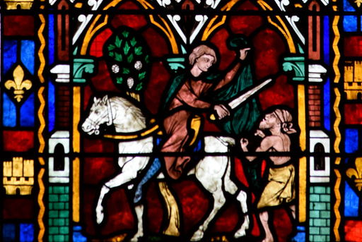
Images & symbolesAu Moyen Âge, les images seraient destinées à faire l'éducation religieuse des illettrés. À travers de multiples photos, je nuance cette idée et révèle les véritables fonctions de l'image sacrée.
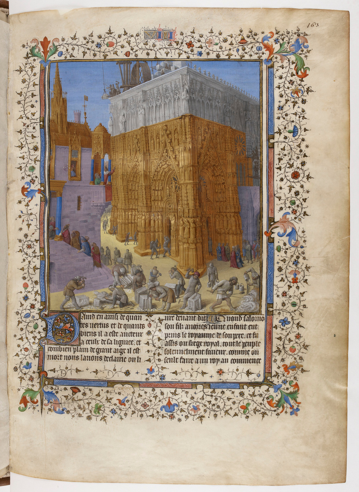
ArchitectureLes cathédrales impressionnent par leur élévation. Comment leur construction a-t-elle été financée ? Combien de temps pour les terminer ? Quelles techniques utilisaient les bâtisseurs du Moyen Âge ?
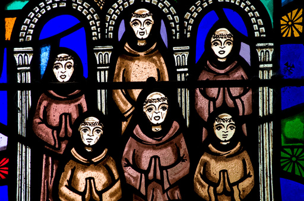
ImmersionSe retirer au monastère implique le respect d'interdits sur la sexualité, l'argent, la nourriture et même la parole. L'emploi du temps est rigoureusement contraint. Il y a aussi quelques bons côtés.
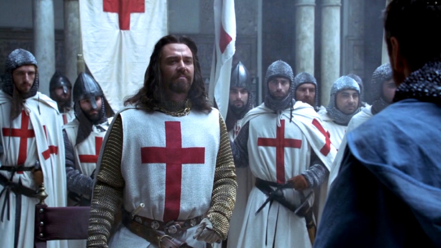
PortraitsCes religieux avaient le droit de se battre et de verser le sang. D'où vient leur ascension ? Pourquoi le roi Philippe le Bel et le pape se sont-ils alliés pour les faire chuter ?
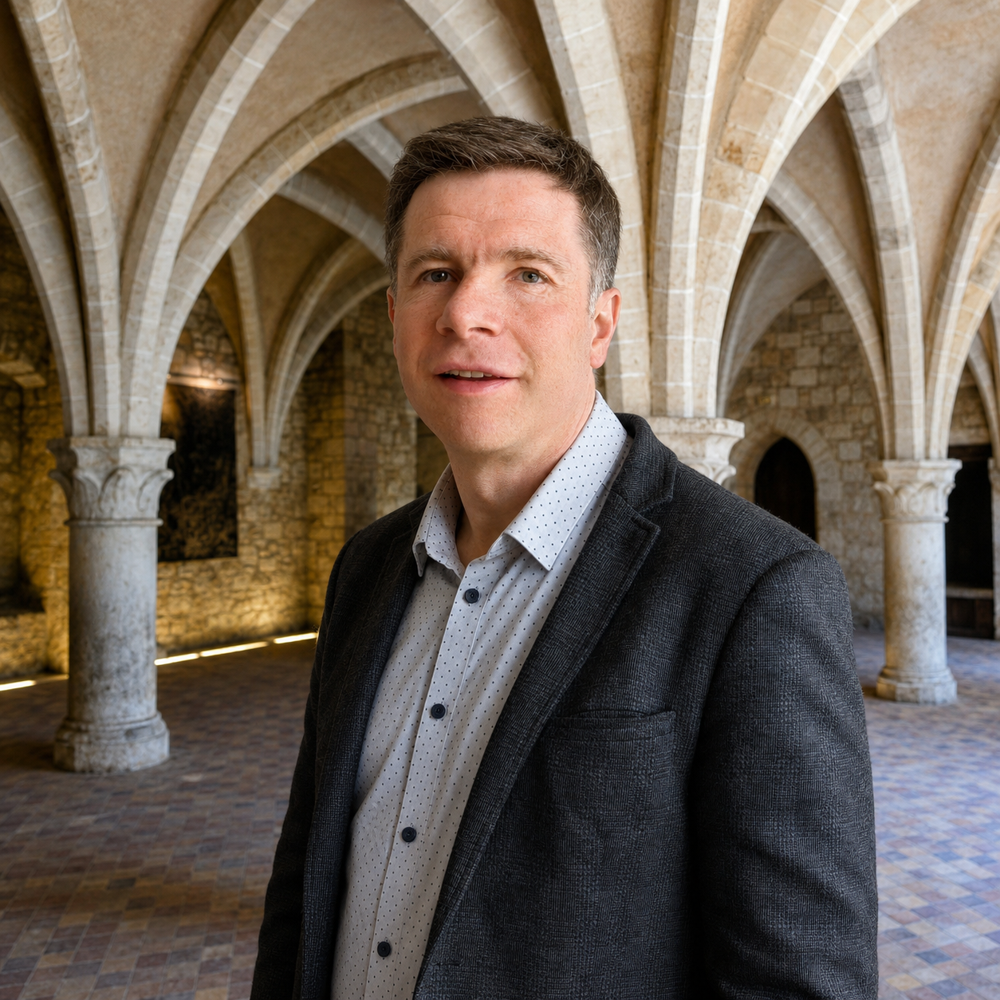
Diplômé en histoire (Bac +5) et vulgarisateur depuis plus de vingt ans, je suis l'auteur de trois livres dont Notre-Dame de Lyre : histoire d'une abbaye disparue (Presses Universitaires de Rouen et du Havre) et du projet « Décoder les églises et les châteaux », suivi par des dizaines de milliers de passionnés.
Ma différence : une narration vivante, de vraies interactions avec le public, et des diaporamas d'une grande qualité photographique. On ressort en ayant compris — et en ayant pris du plaisir.
Association, université inter-âges, événement patrimonial : parlons de votre projet. Je réponds personnellement à chaque demande.
Vingt-sept conférences réparties en quatre thèmes. Chacune s'adapte à votre public et dure environ une heure à une heure trente, suivie d'un temps d'échange.
Lire la pierre, le verre et les figures sacrées
Au Moyen Âge, les peintures, sculptures et vitraux seraient destinés à faire l'éducation religieuse d'un peuple incapable de lire. Je vais nuancer cette idée et expliquer les véritables fonctions de l'image sacrée.
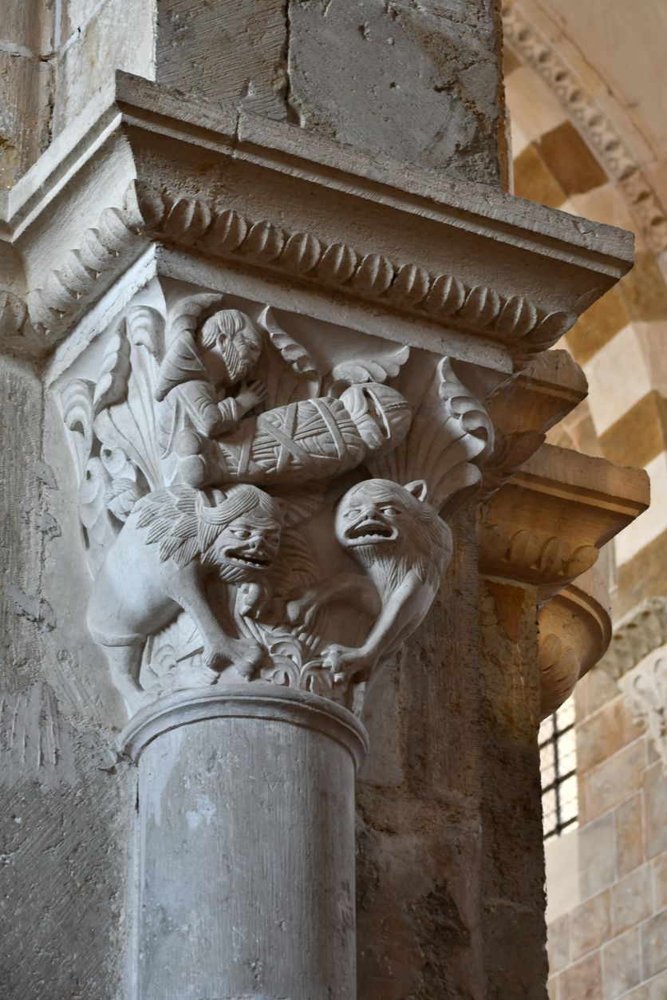
Chapiteaux, bas-reliefs, statues ornent les églises. Je vous propose un tour de France d'exemples énigmatiques : saints difficiles à identifier, scènes incongrues, symboles… Avec, à chaque fois, la clé d'interprétation.
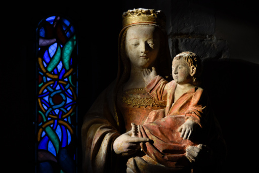
Presque toutes les églises, presque tous les musées d'art exposent une statue de la Vierge accompagnée de son enfant. Comment les sculpteurs et les peintres ont-ils renouvelé ce sujet récurrent ?
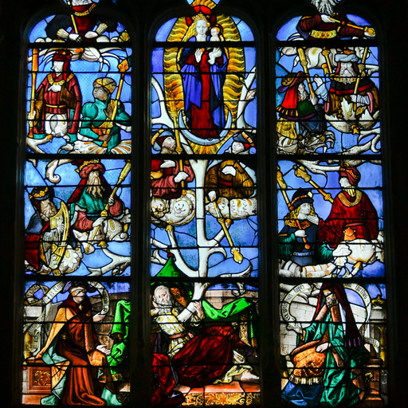
Le processus de fabrication d'un vitrail — ma méthode pour savoir apprécier un vitrail — les plus beaux vitraux de France et de Normandie, vus en détail — 10 vitraux français vraiment étranges.
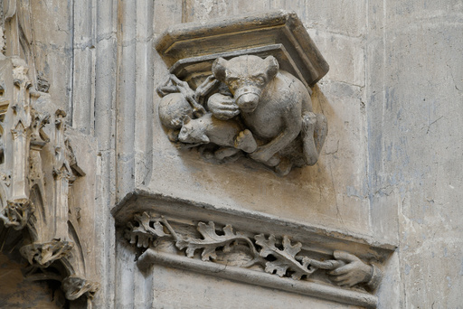
Dans l'art roman et gothique, les animaux prolifèrent. Certains interviennent dans l'histoire sainte. D'autres sont figurés en vertu de leur symbolisme. Que signifient lions, singes, éléphants et créatures fantastiques ?
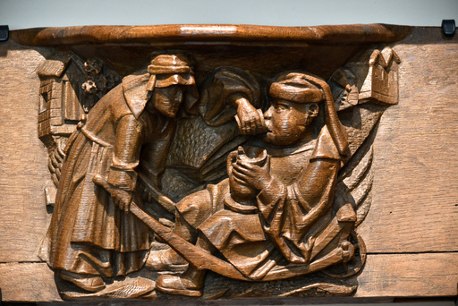
Dans ce tour de France, nous rencontrerons des objets énigmatiques, des sculptures bizarres et des vitraux surprenants. Le christianisme n'est pas toujours la clé pour les décoder.
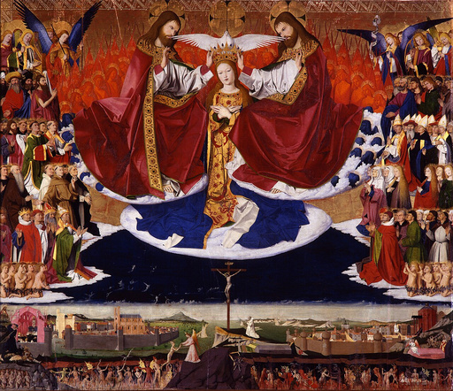
Si les moines bénédictins et le duc Philippe le Bon choisissent de se vêtir de noir, ce n'est pas pour la même raison. Regardez autrement les œuvres d'art et la société médiévales.
Comprendre comment et pourquoi on bâtissait
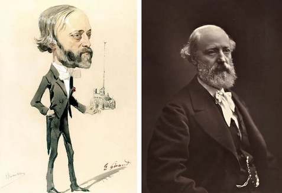
Eugène Viollet-le-Duc (1814–1879) est probablement le plus célèbre architecte du XIXe siècle — un architecte qui a plus rebâti que bâti. Alors que Notre-Dame vient de retrouver sa flèche, interrogeons ses méthodes controversées.
Les cathédrales impressionnent par leur dimension et leur élévation. Comment leur construction a-t-elle été financée ? Combien de temps pour les terminer ? Quelles techniques utilisaient les bâtisseurs du Moyen Âge ?
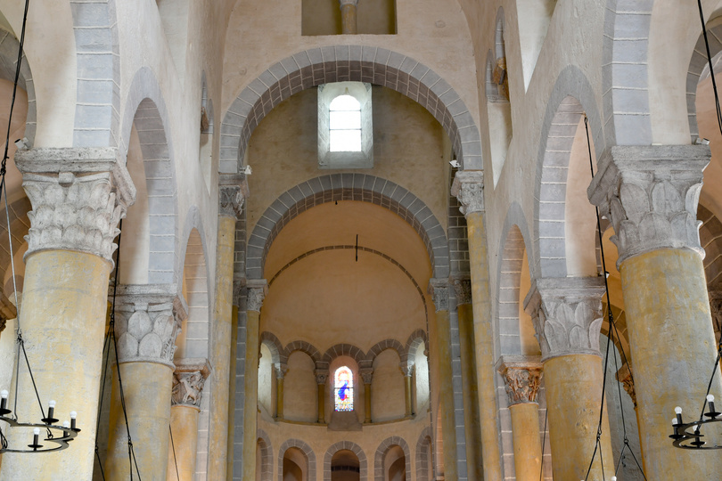
En France et à l'étranger, des historiens de l'art s'interrogent sur la pertinence de cette notion. Cette question est l'occasion de voyager dans la France romane et de revenir sur l'origine normande du terme.
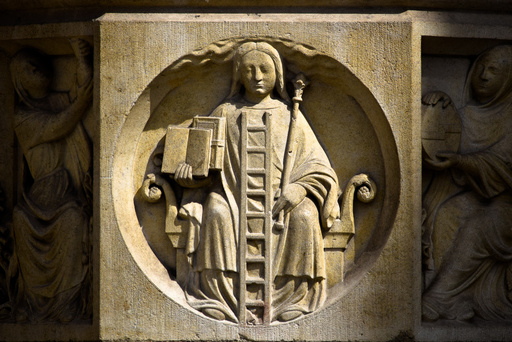
Que racontent les compagnons et les francs-maçons sur leur origine ? Les architectes utilisaient-ils le nombre d'or ? Les bâtisseurs du Moyen Âge étaient-ils si exceptionnels ?
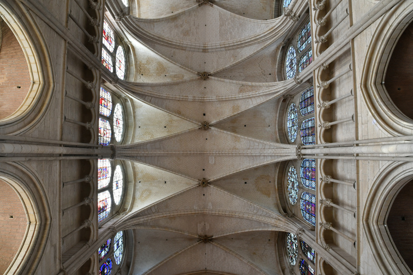
Incendies, guerres, chantiers gigantesques, rivalités entre évêques et villes… Derrière les cathédrales françaises se cachent des siècles d'aventures humaines.
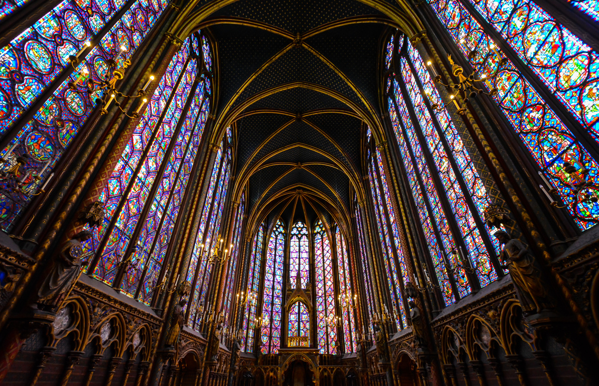
Dans les années 1130, des architectes proposent une nouvelle façon de construire les églises. C'est le départ d'une révolution qui couvrira l'Europe occidentale. Pourquoi tout est parti de Paris et de ses environs ?
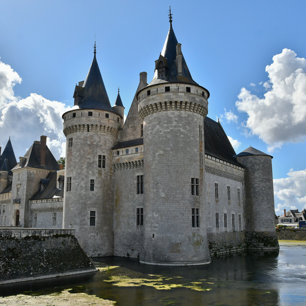
À quand remontent les châteaux-forts ? Comment les assiégeait-on et comment les défenseurs résistaient-ils ? Comment y vivait-on ? Confort, alimentation et hygiène.
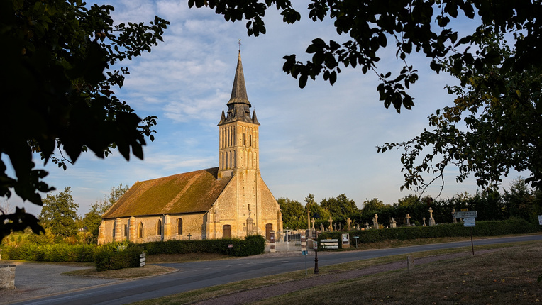
Beaucoup de visiteurs se contentent d'un simple tour sans savoir quoi regarder. Avec ma méthode des trois rondes, affûtez votre regard afin de sortir avec le sentiment d'avoir fait de belles découvertes.
Vivre le quotidien d'une époque
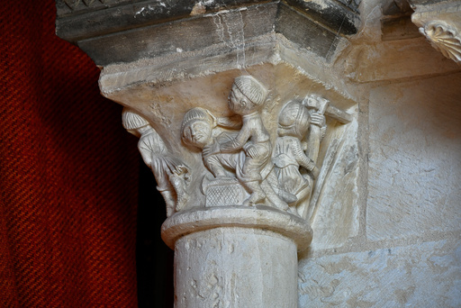
On imagine les abbayes comme des enceintes paisibles. Or la vie des moines a souvent été bousculée par la guerre, des conflits internes et des relations houleuses avec les voisins. Je révèle des monastères beaucoup plus troublés qu'on ne le pense.
Se retirer au monastère implique le respect d'interdits sur la sexualité, l'argent, la nourriture et même la parole. L'emploi du temps est rigoureusement contraint. Alors, prêt à échanger votre vie trépidante contre celle des moines ?
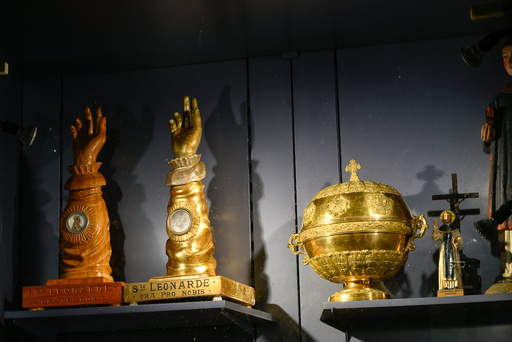
Au Moyen Âge, les reliques agitèrent le monde chrétien. « Elles firent jaillir les églises de terre, mirent les foules en mouvement, inspirèrent les artistes. » Toutes les histoires que je vous raconterai seront vraies.
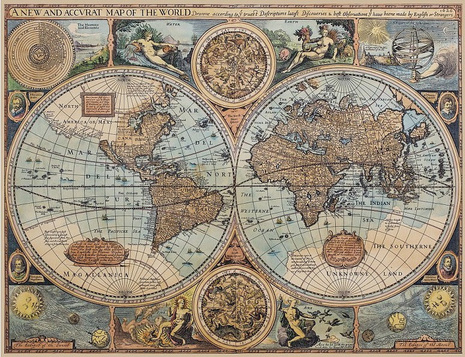
Dans la lignée de Sapiens de Yuval Noah Harari, j'approche l'histoire mondiale à travers les grands phénomènes planétaires : la domestication des animaux, la peste, la montée irrésistible de l'Europe…
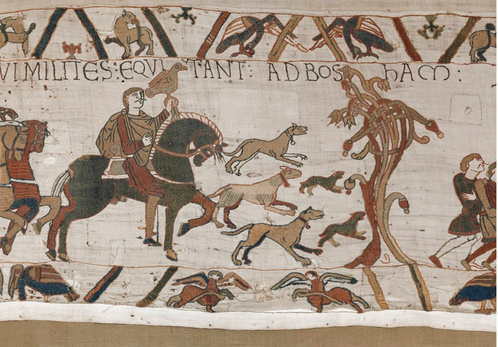
Ce document long de 68 mètres raconte en images tout un pan de l'histoire anglo-normande et offre des fenêtres sur la vie au Moyen Âge. Les scientifiques étudient aussi le matériau même de la tapisserie pour comprendre sa conception.
Femmes et hommes qui ont fait le Moyen Âge
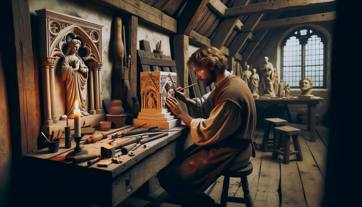
À partir du XIVe siècle, les cours princières et les villes s'arrachent les meilleurs sculpteurs, peintres, orfèvres… Quel était leur statut ? Comment travaillaient-ils ? Étaient-ils si libres dans leur création ?
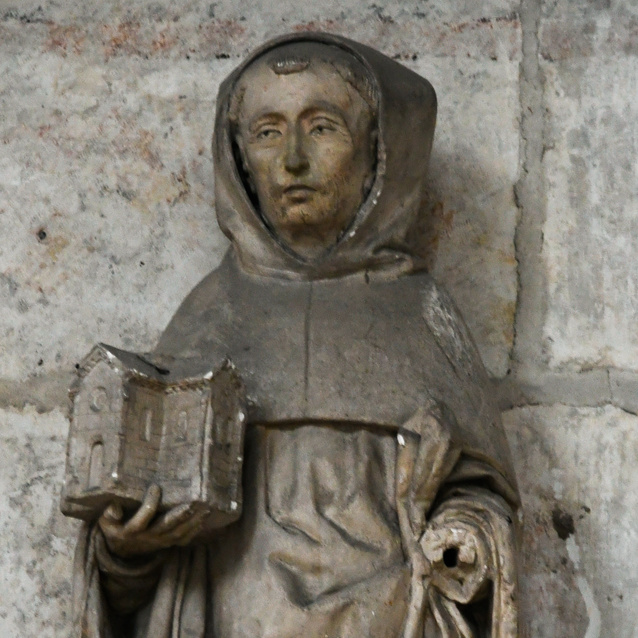
Personnalité religieuse la plus célèbre du Moyen Âge, cet abbé développa l'ordre cistercien. Retiré à Clairvaux, il fut appelé à participer aux grandes affaires de son siècle : papes, rois et templiers.
Ces religieux avaient le droit de se battre et de verser le sang. D'où vient leur ascension ? Pourquoi le roi Philippe le Bel et le pape se sont-ils alliés pour les faire chuter ? Ces chevaliers semblent encore parmi nous.
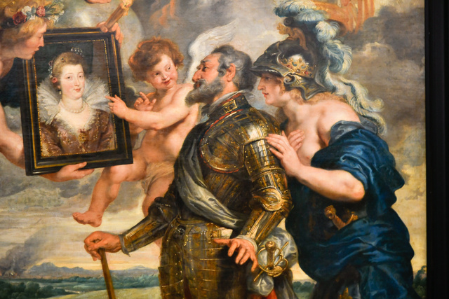
À partir de la fin du Moyen Âge, les rois de France se font tirer le portrait. Œuvres de propagande, ces tableaux adressent des messages qu'il faut savoir décoder et permettent de reparcourir l'histoire de France.
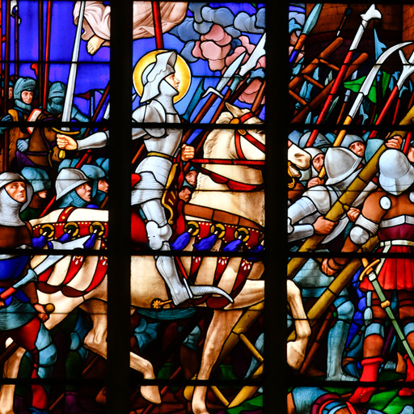
En 18 mois, une très jeune femme renverse le cours de la guerre de Cent Ans. Son histoire est tellement incroyable qu'elle suscite des doutes. Retour sur les raisons de son succès et sur sa fin tragique.
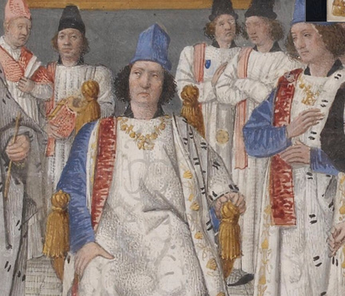
À ce roi est collée une image sinistre : celle d'un homme cruel. Certes Louis XI n'était ni un tendre, ni un modèle de chevalerie. Mais il mérite un portrait qui mette en valeur la complexité de son caractère.
Courageux, redoutable combattant, Guillaume l'était assurément. Si on met de côté ses qualités militaires, qui était le Conquérant ? Découvrons les facettes, parfois peu flatteuses, du plus célèbre des ducs de Normandie.
Dites-moi laquelle et pour quel public : je vous réponds rapidement.
Remplissez ce formulaire, je vous réponds personnellement sous 48 h.
Merci pour votre demande. Laurent vous répondra personnellement sous 48 h.